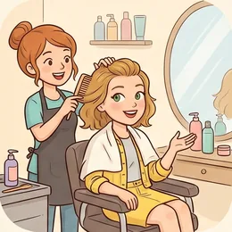
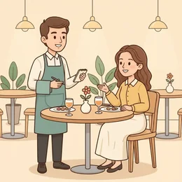

deutschoderwas · Sprechclub · Woche 3 · Strang D · Teil 1 · Dienstag, 29. September
Ehrlich sein oder höflich sein?
„Wie findest du meinen neuen Haarschnitt?“ Deutsche gelten als direkt — trotzdem sagt hier niemand einfach „schlecht“. Es gibt einen Mittelweg, und der besteht aus etwa acht kleinen Wörtern.
Dein Niveau
Gleiches Thema, andere Sätze. Wechsle jederzeit — probier ruhig beide Seiten aus.
Direkt heißt nicht unverpackt
Der Ruf stimmt halb: In Deutschland sagt man eher, was man denkt, als in vielen anderen Ländern. Aber gesagt wird es trotzdem verpackt — nur besteht die Verpackung aus kleinen Wörtern statt aus Umwegen.
Sagst du lieber die Wahrheit oder etwas Nettes?
Wann hast du zuletzt etwas Unangenehmes ehrlich gesagt?
Wie ehrlich antwortet man in deinem Land auf so eine Frage?
Wo verläuft für dich die Grenze zwischen Höflichkeit und Unehrlichkeit?
Warum tut eine ehrliche Antwort manchmal weniger weh als eine nette?
Gibt es Situationen, in denen Direktheit respektlos ist?
🔑 Die Formel für heute:Etwas Positives + ein Weichmacher + der ehrliche Kern.„Die Farbe steht dir gut — die Länge finde ich ehrlich gesagt etwas ungewohnt.“ Dieselbe Wahrheit, ganz anderer Ton.
Acht kleine Wörter, die alles abfedern
eigentlich, eher, etwas, ein bisschen, nicht ganz, ehrlich gesagt, ziemlich, eventuell. Sie ändern den Inhalt nicht — nur die Härte. Wer sie kennt, kann alles sagen, ohne jemanden vor den Kopf zu stoßen.
Was ist der Unterschied zwischen „Das ist schlecht“ und „Das finde ich eher schwierig“?
Welches dieser Wörter benutzt du schon?
Wann wird Abschwächen unehrlich statt höflich?
Merkt man, wenn jemand zu viele Weichmacher benutzt?
💡 Die Faustregel:Ein Weichmacher macht den Satz freundlich. Drei machen ihn unklar. Wenn dein Gegenüber danach nachfragen muss, was du eigentlich meinst, war es einer zu viel.
Zwölf Wörter zwischen ehrlich und freundlich
Sagt jedes Wort laut — und gleich den Beispielsatz hinterher. Achtet dabei auf den Ton, nicht nur auf den Inhalt.
ehrlich gesagt
„Ehrlich gesagt hätte ich es anders gemacht.“
💡 Kündigt an, dass etwas Unbequemes folgt — und wirkt dadurch freundlicher als der Inhalt allein. Auch: offen gestanden.
🪶
eher
„Das finde ich eher schwierig.“
💡 Der wichtigste Weichmacher überhaupt. schwierig klingt hart, eher schwierig klingt nach einer Einschätzung.
🤏
ein bisschen
„Der Text ist mir ein bisschen zu lang.“
💡 Umgangssprachlich und sehr häufig. Etwas neutraler: etwas. Schriftlich lieber: ein wenig.
eigentlich
„Eigentlich hatte ich es anders verstanden.“
💡 Signalisiert: Ich sehe das anders, will aber nicht streiten. Eines der meistbenutzten Wörter im deutschen Alltag.
auf mich wirkt es …
„Auf mich wirkt das etwas unfreundlich.“
💡 Die Ich-Botschaft: Du sprichst über deine Wahrnehmung, nicht über die Wahrheit. Damit kann niemand streiten.
🚫
nicht ganz
„Da bin ich nicht ganz deiner Meinung.“
💡 Die höflichste Form des Widerspruchs. Ich bin nicht deiner Meinung ist hart — nicht ganz lässt Raum.
die Rückmeldung
„Darf ich dir eine ehrliche Rückmeldung geben?“
💡 Das deutsche Wort für Feedback — im Beruf werden beide benutzt. Rückmeldung geben und bekommen.
🎁
die Notlüge
„Manchmal ist eine Notlüge freundlicher als die Wahrheit.“
💡 Wörtlich „eine Lüge aus Not“. Am Donnerstag ist genau das die Streitfrage: Wo hört Höflichkeit auf?
kränken
„Ich wollte dich nicht kränken.“
💡 Stärker als ärgern, schwächer als beleidigen. Und das Adjektiv: gekränkt sein.
beschönigen
„Ich will nichts beschönigen: Es war knapp.“
💡 Ich will nichts beschönigen ist ein starker Einstieg — danach glaubt man dir jede unangenehme Nachricht.
🎚️
der Ton
„Der Ton macht die Musik.“
💡 Das Sprichwort kennt jeder in Deutschland. Und dazu: im richtigen Ton, der Tonfall.
zwischen den Zeilen
„Das musste man zwischen den Zeilen lesen.“
💡 Für Zugezogene die schwerste Übung: Deutsche sagen viel direkt — aber Kritik oft trotzdem angedeutet.
💡 Spiel: Einer sagt einen harten Satz („Das ist schlecht“). Der andere baut ihn in zwei Sekunden um — mit einem Weichmacher und einer Ich-Botschaft. Wer den Inhalt dabei verliert, gibt ab.
Drei Antworten auf dieselbe Frage
„Wie findest du das?“ — und du findest es nicht gut. Erst die drei möglichen Wege, dann drei Satzpaare, bei denen fast alle danebenliegen.
🧊
Ganz direkt
Der Inhalt stimmt, der Ton verletzt. Kommt selten gut an.
Das gefällt mir nicht.
🎈
Ganz höflich
Der Ton stimmt, der Inhalt fehlt. Hilft niemandem weiter.
Ja, ganz schön!
🎯
Verpackt und ehrlich
Positives zuerst, dann der Kern — abgefedert.
Die Idee finde ich gut, die Umsetzung ehrlich gesagt eher schwierig.
✅ So sagt man es
Auf mich wirkt der Text etwas lang.
Warum das stimmtEine Ich-Botschaft: Du sprichst über deine Wirkung, nicht über die Sache selbst. Darüber kann niemand streiten.
❌ So nicht
Der Text ist zu lang.
Das ProblemGrammatisch richtig, aber es klingt wie ein Urteil. Der andere muss sich verteidigen, statt zuzuhören.
✅ So sagt man es
Da bin ich nicht ganz deiner Meinung.
Warum das stimmtnicht ganz verneint nur teilweise — das lässt Raum für den anderen und macht den Widerspruch trotzdem klar.
❌ So nicht
Da bin ich ganz nicht deiner Meinung.
Das ProblemDie Reihenfolge ist falsch: nicht ganz heißt teilweise, ganz nicht gibt es im Deutschen nicht.
✅ So sagt man es
Ehrlich gesagt hätte ich es anders gemacht.
Warum das stimmtEhrlich gesagt kündigt an, dass jetzt eine Meinung kommt. Der andere ist vorbereitet und nimmt es weniger persönlich.
❌ So nicht
Um ehrlich zu sein, das war falsch.
Das ProblemDer Einstieg ist gut, aber danach kommt ein Urteil statt einer Sicht. Besser: … hätte ich es anders gemacht.
Drei Schritte, immer in dieser Reihenfolge:
Etwas Echtes, das dir gefällt — kein Kompliment auf Vorrat, sondern etwas, das wirklich stimmt.
Ein Weichmacher: ehrlich gesagt, eher, etwas, ein bisschen, nicht ganz.
Der Kern als Ich-Botschaft: Auf mich wirkt … / Ich hätte … / Mir wäre … lieber.
Wenn möglich ein Vorschlag: Vielleicht ginge auch …? — dann ist es Hilfe statt Kritik.
Und einer reicht: Wer ehrlich gesagt, eher und ein bisschen in einen Satz packt, sagt am Ende gar nichts mehr.
⚖️ Kurzübung: Einer nennt etwas, das ihm nicht gefällt (ein Film, ein Essen, eine Idee). Der andere sagt dieselbe Meinung dreimal: einmal hart, einmal zu höflich, einmal richtig verpackt.
Die vier Bausteine der ehrlichen Antwort
Ankündigen, anerkennen, den Kern nennen, einen Weg zeigen. Vier Bausteine — und die unangenehmste Antwort wird annehmbar.
1 · ✋ Ankündigen Darf ich ehrlich sein?Ehrlich gesagt …Soll ich dir sagen, was ich denke?
So klingt esDarf ich ehrlich sein? Ich sehe das ein bisschen anders als du.
2 · 👍 Anerkennen Die Idee finde ich gutDas ist dir gut gelungenDa hast du recht
So klingt esDie Idee finde ich richtig gut — vor allem der Anfang.
3 · 🎯 Den Kern nennen Auf mich wirkt …Mir ist … zu …Ich hätte eher …
So klingt esAuf mich wirkt der Schluss allerdings etwas zu schnell.
4 · 💡 Einen Weg zeigen Vielleicht ginge auch …Wie wäre es, wenn …?Ich würde …
So klingt esVielleicht ginge auch ein Satz mehr am Ende — dann wirkt es runder.
1 · ✋ Den Rahmen setzen Ich sage es dir, weil …Ich will nichts beschönigenEs ist nur meine Sicht, aber …
So klingt esIch sage es dir, weil es mir wichtig ist — und ich will nichts beschönigen.
2 · 👍 Konkret anerkennen Besonders gelungen finde ich …Was ich stark finde, ist …Da merkt man, dass …
So klingt esBesonders gelungen finde ich, wie du anfängst — da merkt man, dass du das Thema kennst.
3 · 🎯 Präzise abschwächen Was mich stutzen lässt, ist …Weniger überzeugt hat mich …Da bin ich nicht ganz sicher, ob …
So klingt esWeniger überzeugt hat mich der Schluss — da bin ich nicht ganz sicher, ob die Zahlen tragen.
4 · 💡 Anbieten statt fordern Wenn du magst, schaue ich …Ein Gedanke wäre …Entscheiden musst natürlich du
So klingt esEin Gedanke wäre, den Schluss mit einem Beispiel zu öffnen. Entscheiden musst natürlich du.
Verb die Rückmeldung Ton und Maß Höflichkeit
🗣️ Sofort anwenden: Jeder gibt dem Nachbarn eine ehrliche Rückmeldung zu etwas Kleinem — der Stimme, dem Tempo, einem Satz von vorhin. Alle vier Bausteine müssen vorkommen, in dieser Reihenfolge.
Vier heikle Fragen — zwei Runden
Runde 1: Lest den Dialog zu zweit laut. Runde 2: Deckt die Zeilen von B ab und sprecht frei — die Hinweise reichen.

Dialog 1 · „Der neue Haarschnitt“
Eine Freundin hat sich die Haare schneiden lassen und fragt, wie du es findest. Du findest es nicht gut.
A
Und? Wie findest du es?
B
Die Farbe steht dir wirklich gut — das ist ein toller Ton.
🗣️ Erst etwas Echtes. Kein allgemeines Lob, sondern ein konkreter Punkt.tippen = Hilfe zeigen
A
Und die Länge?
B
Ehrlich gesagt ist sie mir noch ein bisschen ungewohnt.
🗣️ Ehrlich gesagt plus ein bisschen. Ein Weichmacher hätte gereicht, zwei gehen gerade noch.tippen = Hilfe zeigen
A
Also gefällt es dir nicht.
B
Doch, schon. Ich muss mich nur an das Neue gewöhnen — dir gefällt es ja.
🗣️ Doch korrigiert eine Verneinung. Und die Meinung des anderen zählt am Ende mehr.tippen = Hilfe zeigen
A
Stimmt. Ich finde es super.
B
Dann ist doch alles gut. Und mutig war es auf jeden Fall!
🗣️ Ein ehrliches Kompliment zum Schluss — mutig stimmt immer und lügt nicht.tippen = Hilfe zeigen
Dialog 2 · „Der Text der Kollegin“
Eine Kollegin bittet dich um Rückmeldung zu ihrem Entwurf. Er hat einen guten Anfang und einen schwachen Schluss.
A
Magst du kurz drüberschauen? Ganz ehrlich, bitte.
B
Gern. Der Anfang ist stark — man weiß sofort, worum es geht.
🗣️ Konkret loben. „Ist gut“ hilft niemandem weiter.tippen = Hilfe zeigen
A
Und der Rest?
B
Auf mich wirkt der Schluss etwas schnell. Da bin ich nicht ganz sicher, ob die Zahlen tragen.
🗣️ Ich-Botschaft plus nicht ganz sicher: eine Einschätzung, kein Urteil.tippen = Hilfe zeigen
A
Was würdest du ändern?
B
Vielleicht ein Beispiel statt der letzten Zahl. Aber das ist nur meine Sicht.
🗣️ Vorschlag statt Anweisung. Und ein Satz, der die Entscheidung zurückgibt.tippen = Hilfe zeigen
A
Guter Punkt, das probiere ich.
B
Sag Bescheid, wenn du magst — ich schaue gern noch mal.
🗣️ Kritik mit einem Angebot beenden. Dann bleibt sie Hilfe.tippen = Hilfe zeigen

Dialog 3 · „Das Essen beim Gastgeber“
Du bist eingeladen, das Essen schmeckt dir nicht. Der Gastgeber fragt direkt nach.
A
Und? Schmeckt es dir?
B
Die Soße ist richtig gut. Nur mit Koriander habe ich es nicht so.
🗣️ Ein echtes Lob und dann eine Eigenschaft von dir statt ein Fehler des Essens.tippen = Hilfe zeigen
A
Oh nein, da ist ziemlich viel drin.
B
Kein Problem, ich schiebe es an den Rand. Das kennst du ja nicht.
🗣️ Sofort entlasten. Der Gastgeber soll sich nicht schlecht fühlen.tippen = Hilfe zeigen
A
Soll ich dir etwas anderes machen?
B
Auf keinen Fall. Der Rest ist wirklich lecker, davon nehme ich gern nach.
🗣️ Ein Angebot höflich ablehnen und gleich etwas Positives anhängen.tippen = Hilfe zeigen
A
Na gut. Sag mir das nächste Mal einfach vorher Bescheid.
B
Mache ich, versprochen.
🗣️ Kurz zustimmen. Alles Weitere würde die Sache größer machen, als sie ist.tippen = Hilfe zeigen
Dialog 4 · „Die Einladung, die du nicht willst“
Jemand fragt, ob du am Wochenende mitkommst. Du willst nicht — und suchst nach einer Antwort, die weder lügt noch verletzt.
A
Kommst du Samstag mit zum Konzert?
B
Danke, dass du an mich denkst. Ehrlich gesagt ist das nicht so meine Musik.
🗣️ Erst das Danke, dann die Wahrheit. Und eine Eigenschaft von dir, kein Urteil über die Band.tippen = Hilfe zeigen
A
Ach komm, das wird bestimmt gut!
B
Kann gut sein. Ich hätte an dem Abend trotzdem lieber Ruhe.
🗣️ Zustimmen, wo es geht — und trotzdem beim eigenen Nein bleiben.tippen = Hilfe zeigen
A
Schade.
B
Finde ich auch. Wollen wir stattdessen Sonntag Kaffee trinken?
🗣️ Ein konkretes Gegenangebot. Ohne das klingt jede Absage nach Desinteresse.tippen = Hilfe zeigen
A
Ja, gern!
B
Super. Und erzähl mir am Sonntag, wie es war.
🗣️ Interesse zeigen. So merkt der andere: Es ging um den Abend, nicht um ihn.tippen = Hilfe zeigen
🎭 Und jetzt ihr: Spielt Dialog 1 noch einmal — aber A hakt dreimal nach und will eine klare Antwort. B muss ehrlich bleiben, ohne einmal schlecht oder hässlich zu sagen.
🧩 Abschwächen: eher, etwas, nicht ganz
Diese Wörter ändern nichts an der Aussage — nur an ihrer Härte. Sie stehen an einer festen Stelle im Satz, und genau da liegt die Schwierigkeit.
Die Weichmacher stehen direkt vor dem Wort, das sie abschwächen: Das ist etwas lang. · Ich finde es eher schwierig. Steht die Abschwächung an der falschen Stelle, ändert sich die Bedeutung: nicht ganz fertig (fast fertig) ist etwas anderes als ganz und gar nicht fertig. Und ehrlich gesagt steht meist ganz vorn oder direkt hinter dem Verb.
🪶eher + AdjektivDas finde ich eher schwierig.
▾
🤏etwas / ein bisschen + AdjektivDer Text ist etwas zu lang.
▾
🚫nicht ganz = teilweiseDa bin ich nicht ganz deiner Meinung.
▾
💬ehrlich gesagt am SatzanfangEhrlich gesagt hätte ich es anders gemacht.
EinleitungEhrlich gesagt
Verb an zweiter Stellefinde
Wer und wasich den Schluss
Weichmacher + Kernetwas zu schnell.
Die Weichmacher, und wo sie stehen
Lies jede Zeile laut. Achte darauf, dass der Weichmacher immer direkt vor dem Wort steht, das er abschwächt.
🪶
eher
verschiebt die Aussage zur Mitte
eher schwierig statt schwierig
🤏
etwas / ein bisschen
verkleinert das Maß
etwas zu lang statt zu lang
🚫
nicht ganz
verneint nur teilweise
nicht ganz fertig ≠ nicht fertig
eher schwierig · eher ungewöhnlichetwas lang · etwas lautein bisschen zu spätnicht ganz sicher · nicht ganz deiner Meinungehrlich gesagt · offen gestandenvielleicht · eventuell · unter Umständen
Die Falle: die Ich-Botschaft
Der größte Unterschied liegt nicht im Weichmacher, sondern im Subjekt. Du bist … ist ein Urteil, Auf mich wirkt … ist eine Beobachtung. Beides sagt dasselbe — aber nur eines lässt sich nicht bestreiten.
🫵
Du-Botschaft
klingt wie ein Urteil
Du machst das zu kompliziert.
🙋
Ich-Botschaft
beschreibt deine Wahrnehmung
Ich komme da nicht ganz mit.
👁️
Auf mich wirkt …
die neutralste Form von allen
Auf mich wirkt das etwas streng.
❌ Der Text ist zu lang.✅ Auf mich wirkt der Text etwas lang.❌ Du erklärst das unverständlich.✅ Ich habe an der Stelle den Faden verloren.❌ Das ist falsch.✅ Da bin ich mir nicht ganz sicher.
🧱 Bau die Sätze selbst
Tippe die Teile in der richtigen Reihenfolge an. Danach auf „Prüfen“ — und den fertigen Satz laut lesen.
📖 Und jetzt im Zusammenhang
Eine ehrliche Rückmeldung, Satz für Satz. Wähle in jeder Lücke das passende Wort.
Drei Handgriffe, in dieser Reihenfolge:
Tausch das Subjekt: aus Der Text ist … wird Auf mich wirkt der Text …
Setz einen Weichmacher davor:etwas, eher, ein bisschen.
Häng eine Frage an:Wie siehst du das? — dann ist es ein Gespräch, kein Urteil.
Und stell etwas Echtes voran, das dir wirklich gefällt.
Aber übertreib es nicht: Nach dem dritten Weichmacher versteht niemand mehr, was du eigentlich meinst. Einer reicht.
🎭 Drei unbequeme Fragen
Zu zweit. Einer fragt und lässt nicht locker, einer muss ehrlich bleiben, ohne zu verletzen. Danach tauschen.
1 · Wie findest du meine Wohnung?
A ist frisch eingezogen und stolz. B findet die Wohnung dunkel und ungünstig geschnitten — soll aber ehrlich antworten, ohne die Freude zu zerstören.
Die Lage ist superEhrlich gesagt ist es mir etwas dunkelAber der Balkon ist tollWas willst du noch ändern?
Was mir sofort gefällt, ist …Auf mich wirkt der Flur etwas engMit hellen Möbeln käme das ganz andersAber du wohnst hier, nicht ich
✅ Eine gute Runde enthältB nennt mindestens zwei Dinge, die wirklich gut sind, benutzt eine Ich-Botschaft für die Kritik und endet mit einem Vorschlag.
2 · Die Rückmeldung im Beruf
A hat eine Präsentation gehalten und bittet um ehrliches Feedback. Sie war zu lang und unstrukturiert — aber inhaltlich gut.
Der Inhalt war starkAuf mich wirkte es etwas langIch habe an einer Stelle den Faden verlorenVielleicht weniger Folien?
Besonders gelungen fand ich …Was mich stutzen ließ, war …Ich bin nicht ganz sicher, ob …Entscheiden musst natürlich du
✅ Eine gute Runde enthältB lobt konkret statt allgemein, nennt genau eine Hauptkritik statt fünf kleiner — und bietet am Ende Hilfe an.
3 · Nein zu einer Einladung
A lädt B zu etwas ein, worauf B keine Lust hat. A hakt zweimal nach. B soll weder lügen noch unhöflich werden.
Danke, dass du an mich denkstDas ist nicht so meine MusikIch hätte lieber RuheWollen wir stattdessen …?
Ich freue mich, dass du fragstEhrlich gesagt liegt mir das nichtKann gut sein, trotzdem …Erzähl mir danach, wie es war
✅ Eine gute Runde enthältB lügt nicht, sagt aber auch nichts Abwertendes über die Sache — und macht ein konkretes Gegenangebot.
🎴 Sprechkarten
Zieh eine Karte und sprich mindestens vier Sätze am Stück.
Deine Aufgabe
Tippe auf den Knopf.
⏱️ Die 90-Sekunden-Challenge
Ein Wort, anderthalb Minuten, freies Sprechen. Es muss nicht perfekt sein — es muss nur weitergehen.
Dein Wort
ehrlich gesagt
1:30
Erzähl es als kleine Geschichte, dann trägt sich die Zeit von selbst:
Wer hat gefragt? Eine Kollegin wollte wissen, ob …
Was hast du wirklich gedacht? Ehrlich gesagt fand ich …
Was hast du gesagt? Ich habe geantwortet, dass …
Wie hat der andere reagiert? Am Ende war sie …
Und wenn dir ein Wort fehlt: sag es einfacher. „Ich habe es netter formuliert“ reicht völlig.
⏱️ Spielregel: In jeder Runde muss einmal ein Weichmacher und einmal eine Ich-Botschaft vorkommen. Der Partner hebt die Hand, sobald beides da war.
✅ Sitzt es schon?
8 Fragen. Tippe auf deine Antwort — die Erklärung kommt sofort.
✍️ Lückentext
Wähle in jeder Lücke das passende Wort.
📣 Danach laut: Sagt reihum je einen harten Satz — und der Nachbar formt ihn sofort um. Wer keinen Weichmacher findet, gibt weiter.
📮 Deine Hausaufgabe bis Donnerstag
Vier kleine Aufgaben, zusammen etwa 25 Minuten. Am Donnerstag geht es weiter: Wann wird aus Höflichkeit eine Lüge?
💡 Warum das hilft: Diese Sätze braucht man überall — im Beruf, unter Freunden, beim Vermieter. Und sie sind der Unterschied zwischen „ehrlich“ und „unangenehm“.
0 von 0 Aufgaben geschafft.
So sehen die Paare aus:
❌ Das ist zu teuer. → ✅ Für mich ist das ehrlich gesagt etwas zu teuer.
❌ Der Text ist zu lang. → ✅ Auf mich wirkt der Text ein bisschen lang.
❌ Das funktioniert nicht. → ✅ Da bin ich nicht ganz sicher, ob das funktioniert.
❌ Du redest zu schnell. → ✅ Ich komme beim Tempo manchmal nicht ganz mit.
❌ Das ist falsch. → ✅ Ich hätte das eher anders verstanden.
Ein einziger Test: Steht in deinem Satz ein „ich“ oder ein „auf mich“? Dann ist es eine Beobachtung, kein Urteil.
Dieselbe Kritik, drei Nähen:
Zur Freundin: Ehrlich gesagt war mir der Schluss zu schnell — ich hab den Faden verloren.
Zum Kollegen: Der Anfang war stark. Auf mich wirkte der Schluss etwas gerafft.
Zur Vorgesetzten: Inhaltlich fand ich es überzeugend. Beim Schluss war ich nicht ganz sicher, ob die Zahlen für alle nachvollziehbar waren.
Je größer die Distanz, desto mehr Verpackung — aber der Kern bleibt derselbe.
Und in allen drei Fällen kommt zuerst etwas Echtes, das gut war.
Wichtig: Mehr Verpackung heißt nicht weniger Inhalt. Wenn dein Gegenüber danach nicht weiß, was du meinst, war es zu viel.
📬 Abgabe: Schick deine Sprachnachricht bis Sonntag in die WhatsApp-Gruppe. Ich höre jede an und antworte dir persönlich.
🔜 Am Donnerstag, Teil 2:Wenn Höflichkeit zur Lüge wird — im Rollenspiel. Wo genau verläuft die Grenze, und was kostet es, sie zu überschreiten?